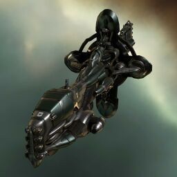

Hyperion

Тип корабля: Линкор
Государство/Организация: Gallente
Примерная стоимость: 323.000.000 ISK
Описание
Заполняя нишу бластерных кораблей в классе линкоров, флот Федерации привлек лучшие таланты к работе над проектом «Гиперион». В результате был создан один из наиболее смертоносных и универсальных боевых кораблей, когда-либо бороздивших тьму космоса.
Характеристики
Корпус
Запас прочности корпуса: 9.350 ед.
Вместимость грузового отсека: 845 м^3
Объем отсека для дронов: 175 м^3
Пропускная способность канала телеуправления: 125 Мбит/с
Отсек спасательного фрегата: 1 ед.
Масса: 100.200.000 кг
Занимает объем: 470.000,0 м^3 (50.000,0 м^3 в разобранном виде)
Влияние инертности конструкции: 0,118x
Сопротивление корпуса ЭМ-урону: 33 %
Сопротивление корпуса термальному урону: 33 %
Сопротивление корпуса кинетическому урону: 33 %
Сопротивление корпуса фугасному урону: 33 %
Броня
Запас прочности брони: 8.800 ед.
Сопротивление брони ЭМ-урону: 50 %
Сопротивление брони термальному урону: 35 %
Сопротивление брони кинетическому урону: 35 %
Сопротивление брони фугасному урону: 10 %
Щит
Запас прочности щита: 8.250 ед.
Влияние на время регенерации щитов: 41 минут и 40 секунд
Сопротивление щита ЭМ-урону: 0 %
Сопротивление щита термальному урону: 20 %
Сопротивление щита кинетическому урону: 40 %
Сопротивление щита фугасному урону: 50 %
Сопротивление средствам РЭП
Сопротивление накопителя нейтрализирующему воздействию: 0 %
Сопротивление воздействию генератору стазис-поля: 0 %
Сопротивление воздействию помех на наводку вооружения: 0 %
Накопитель энергии
Емкость накопителя: 7.200,0 ГДж
Время востановления заряда: 25 минут
Целеуказания
Максимальная дальность захвата цели: 85,4 км
Максимальное количество захваченных целей: 7
Радиус сигнатуры: 485 м
Разрешающая способность систем захвата цели: 143 мм
Эффективность радарной системы: -
Эффективность магнитнометрической системы: 23 ед.
Эффективность гравиметрической системы: -
Эффективность ладарной системы: -
Двигательная установка
Максимальная скорость: 115 м/с
Скорость в варп-режиме: 3,0 а.е./с.
Служба оснащения
Мощность ЦПУ: 600,0 Тф
Мощность реактора: 16.000 МВт
Калибровка: 400 ед.
Точки монтажа орудийных установок: 6
Точки монтажа пусковых установок: 1
Разъемы большой мощности: 7
Разъемы средней мощности: 5
Разъемы малой мощности: 7
Разъемы под установку тюнинг-модулей: 3